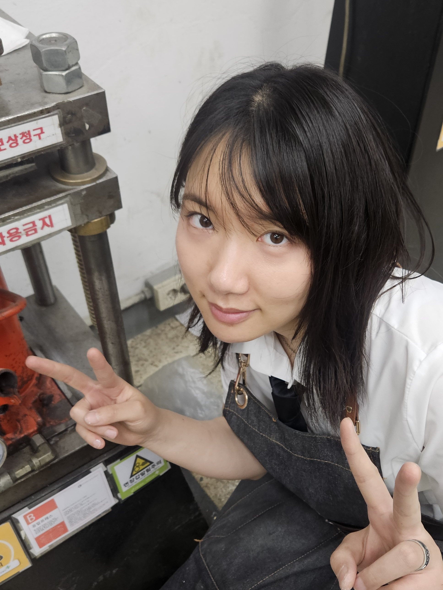

엄나윤 Eom, Nayun
Born in Seoul, Korea
Education
B.F.A. in Metalcraft & Jewelry / Wonkwang University, Korea
Jewelry Design / Seongdong Technical High School, Korea
Present
Graduate Student, Kookmin University, Seoul
Instructor, Advanced Major Club of Seongdong Technical High School, Korea
Group Exhibition
'공예+지금+24' / Kookmin Formative Arts Gallery, Seoul, Korea
'공예별 나들이' / Gallery Kemchae, Seoul, Korea
'Assemblage' / Iksan Arts Center, Iksan, Korea
Awards
Silver Medal, Lapidary / 55th Korea Skills Competition, Korea